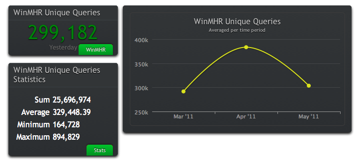

CLU
CLU is a very powerful and easy way to observe trends, and get statistics about data sets.
It can really help with driving business decisions by quickly getting you key statistics about your
products.
It runs in the browser, so JavaScript does the heavy lifting on the client.
This allows CLU to easily scale.
This is just one example screenshot, which took 3 mouse clicks and 10 seconds to get the last quarter's data for WinMHR queries:

The backend to CLU is an intelligent database statistics gatherer.
It is also easily extensible, generally taking about ten minutes to add a new
database statistics gatherer.
Languages
- HTML5
- CSS3
- JavaScript
- Python
- PostgreSQL
Tools
- WebKit Inspector
- JSON
- Ajax